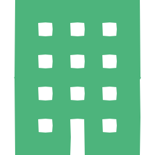

ガルヒ鍼灸院
当院について
院長紹介
我留比
こんにちは、訪問はりきゅうマッサージ鍼灸院、
院長の我留比です。
この度は訪問はりきゅうマッサージガルヒ鍼灸院のホームページをご覧いただきありがとうございます。
整形外科、整骨院、訪問鍼灸で10年以上の経験を経て「訪問はりきゅうマッサージ ガルヒ鍼灸院」を開業しました。
日本では高齢者の人口が増え、介護や医療のサポートが重要視されてくる社会へと移行しています。体の痛みや拘縮で外出が困難な方や、高齢で歩行が難しい方が増えてくる中で外出が不要な「訪問サービス」という分野はさらなる需要とともに、社会への貢献度が高くなると考えています。
これからも患者様の笑顔の輪を広げていくため、生活を支えるパートナーとして患者様をサポートさせていただきますので、「ガルヒ鍼灸院」をどうぞよろしくお願いいたします。
経歴
- 9999年 ガルヒ高等学校 ガルヒ科 卒業
- 9999年 ガルヒ専門学校 ガルヒ科 卒業
- 9999年 ガルヒ医科大学 ガルヒ科 研修生 修了
- ガルヒ市鍼灸マッサージ師会所属
スタッフ紹介
我留美
こんにちは、訪問はりきゅうマッサージ鍼灸院
女性スタッフの我留美です。
鍼灸マッサージの可能性の広さに魅力を感じ、現在この仕事に従事しています。大学病院での鍼治療、整骨院勤務、高齢者向け施設内での鍼灸・マッサージ施術経験を経て、現在は訪問鍼灸・マッサージの施術を行っています。お身体の辛さから精神的な疲労など、様々な分野で鍼灸マッサージ施術の効果があると感じており、色々な方にこの施術を受けてもらいたいと考えています。
1人で抱え込まず、私たちを頼って頂けるととても嬉しいです。
現状の辛さに寄り添い、丁寧な治療を心がけています。
少しでも皆様が幸せに過ごせるお手伝いをさせて頂きたいと思っています。肩こり、頭痛、腰痛、足のむくみ、疲労感など、身体の不調があれば何でもご相談ください。
経歴
- 9999年 ガルヒ高等学校 ガルヒ科 卒業
- 9999年 ガルヒ専門学校 ガルヒ科 卒業
- 9999年 ガルヒ医科大学 ガルヒ科 研修生 修了
- ガルヒ市鍼灸マッサージ師会所属

当院の理念
よりよい日常生活を送っていただき、心身ともに健康になっていただくように精進いたします。
お身体のことや日常生活での不安など何でも相談でき、
安心してはりきゅうマッサージを受けることのできる身近な治療院として、思いやりを持って患者様をサポートします。
患者様が1人で悩まないために・・・
患者さんの思いを尊重し、他医療機関や、介護関係者の皆さまと密接に連携をします。
また患者様やご家族への十分な説明と納得を大事にします。
質の高い医療を提供します。
痛みを取り除くだけでなく、心まで良い状態になっていく事を目指していきます。
呼ぼう、機能回復まで含めて、皆さまに日常生活を幸せで健康に過ごしていただくことを目指します。
施術を満足していただくために、初診ではカウンセリング、身体所見にお時間を頂きます。はりきゅう・マッサージの現場では、緊急に治療が必要な、重症の病気を警戒する必要がある徴候や症状があります。これをレッド・フラッグ・サインといいます。患者さんの様々な訴えや症状の中で、このレッドフラッグを見逃すと、思わぬ大きな病気を見逃すことになりかねません。
当院に受診された患者様のなかで、眠れないくらい強い痛み、発熱、体重減少、発疹、ものが見えにくい、呼吸が苦しい、手足に力が入らない等が見られた場合には、速やかに医師への受診を勧めます。
当院では西洋医学と併用していく事で、症状の改善を目指していきます。
西洋医学で容易に治るもの、治療の機会を損失させずに、患者様の身体がより良くなっていくためにしっかりとサポートしていきます。
アクセス
ガルヒ鍼灸院
〒999-9999 ガルヒ県ガルヒ市ガルヒ町1-1-1

999-9999-9999
（受付時間 平日9:00～18:00）